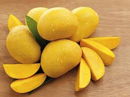

Suele ser un árbol lenoso, que alcanza un gran tamano y altura (puede superar los 30 m
de altura, sobre todo, si tiene que competir por los rayos solares con árboles más grandes,
como sería en una plantación de cocoteros), siempre y cuando sea en un clima cálido.
En las zonas de climas templado puede cultivarse aunque no suele alcanzar una gran altura,
por las incidencias climáticas que le resultan adversas. Es originario de la India y se
cultiva en países de clima cálido además de algunos de climas templado como Cuba, Puerto
Rico, Colombia, Guatemala, Venezuela, Panamá, Bolivia, Honduras, Costa Rica, El Salvador,
Nicaragua, Paraguay,México, República Dominicana en la zona de clima subtropical,
Argentina,Perú, Chile,China Ecuador en Espana se cultiva en la Costa Tropical de
Granada. En Cuba se utiliza mucho pare elaborar refrescos y preservados, en el lugar con mas
variedades de mangos, como el filipino, toledo, papelina, senora, bizcochuelo, hilacha,
mango mamey, mango huebo de toro, mango macho entre otras variedadez, una de las zonas
del mundo mas conocidas por sus mangos esta en la zona oriental del pais, Santiago de
Cuba, El Caney. En la zona intertropical es una planta sumamente noble: no requiere de
riego y resiste los incendios; una plantación de mangos difícilmente podría quemarse
durante la época de sequía, ya que es el período de máximo crecimiento de biomasa para
estos árboles y de mayor actividad de la fotosíntesis por la menor nubosidad. Es un árbol
agresivo con otras especies para ocupar un espacio determinado. En otras ocasiones se ha
visto que un mango ubicado a unos metros de un cocotero, desarrolló una rama bastante
corpulenta que la dirigió hacia el mismo y comenzó a cubrirlo, con el fin de aprovechar
la luz solar que le tapaba en parte. Lo único que pudo hacer el cocotero (que no tiene
ramas) fue inclinarse bastante tratando de evitar esta amenaza.
